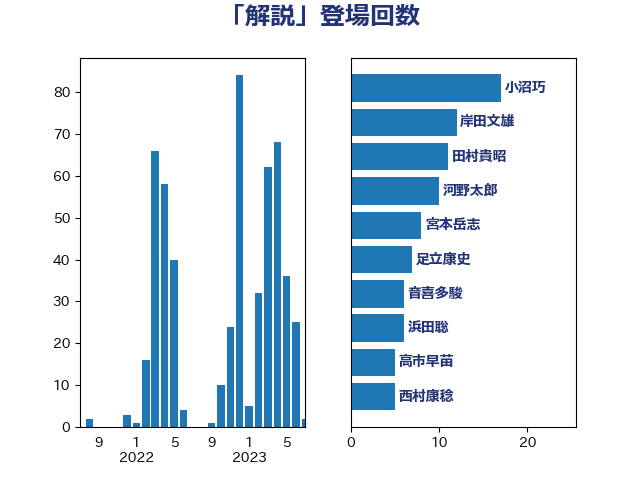

単語「解説」

| 小沼巧 | 立憲民主党 | 17 回 |
| 岸田文雄 | 自由民主党 | 12 回 |
| 田村貴昭 | 日本共産党 | 11 回 |
| 河野太郎 | 自由民主党 | 10 回 |
| 宮本岳志 | 日本共産党 | 8 回 |
| 足立康史 | 日本維新の会 | 7 回 |
| 音喜多駿 | 日本維新の会 | 6 回 |
| 浜田聡 | NHK党 | 6 回 |
| 高市早苗 | 自由民主党 | 5 回 |
| 西村康稔 | 自由民主党 | 5 回 |
| 松本剛明 | 自由民主党 | 5 回 |
| 宮本徹 | 日本共産党 | 5 回 |
| 高木かおり | 日本維新の会 | 4 回 |
| 重徳和彦 | 立憲民主党 | 4 回 |
| 萩生田光一 | 自由民主党 | 4 回 |
| 若宮健嗣 | 自由民主党 | 4 回 |
| 礒崎哲史 | 国民民主党 | 4 回 |
| 石橋通宏 | 立憲民主党 | 4 回 |
| 石垣のりこ | 立憲民主党 | 4 回 |
| 沢田良 | 日本維新の会 | 4 回 |
| 池下卓 | 日本維新の会 | 4 回 |
| 打越さく良 | 立憲民主党 | 4 回 |
| 小西洋之 | 立憲民主党 | 4 回 |
| 勝部賢志 | 立憲民主党 | 4 回 |
| 伊藤岳 | 日本共産党 | 4 回 |
| 井坂信彦 | 立憲民主党 | 4 回 |
| 齋藤健 | 自由民主党 | 3 回 |
| 鈴木庸介 | 立憲民主党 | 3 回 |
| 鈴木俊一 | 自由民主党 | 3 回 |
| 西村智奈美 | 立憲民主党 | 3 回 |
| 笠井亮 | 日本共産党 | 3 回 |
| 田村まみ | 国民民主党 | 3 回 |
| 梅村聡 | 日本維新の会 | 3 回 |
| 末松信介 | 自由民主党 | 3 回 |
| 斉藤鉄夫 | 公明党 | 3 回 |
| 岸真紀子 | 立憲民主党 | 3 回 |
| 岩渕友 | 日本共産党 | 3 回 |
| 吉田統彦 | 立憲民主党 | 3 回 |
| 高良鉄美 | 無所属 | 2 回 |
| 高橋千鶴子 | 日本共産党 | 2 回 |
| 青山大人 | 立憲民主党 | 2 回 |
| 鈴木隼人 | 自由民主党 | 2 回 |
| 金子恭之 | 自由民主党 | 2 回 |
| 西田実仁 | 公明党 | 2 回 |
| 西岡秀子 | 国民民主党 | 2 回 |
| 芳賀道也 | 国民民主党 | 2 回 |
| 米山隆一 | 立憲民主党 | 2 回 |
| 篠原豪 | 立憲民主党 | 2 回 |
| 篠原孝 | 立憲民主党 | 2 回 |
| 穀田恵二 | 日本共産党 | 2 回 |
| 福島みずほ | 社会民主党 | 2 回 |
| 玉木雄一郎 | 国民民主党 | 2 回 |
| 漆間譲司 | 日本維新の会 | 2 回 |
| 渡辺周 | 立憲民主党 | 2 回 |
| 浅川義治 | 日本維新の会 | 2 回 |
| 永岡桂子 | 自由民主党 | 2 回 |
| 森本真治 | 立憲民主党 | 2 回 |
| 柚木道義 | 立憲民主党 | 2 回 |
| 杉尾秀哉 | 立憲民主党 | 2 回 |
| 新妻秀規 | 公明党 | 2 回 |
| 志位和夫 | 日本共産党 | 2 回 |
| 平木大作 | 公明党 | 2 回 |
| 川田龍平 | 立憲民主党 | 2 回 |
| 山添拓 | 日本共産党 | 2 回 |
| 山口壯 | 自由民主党 | 2 回 |
| 山井和則 | 立憲民主党 | 2 回 |
| 山下貴司 | 自由民主党 | 2 回 |
| 山下芳生 | 日本共産党 | 2 回 |
| 小田原潔 | 自由民主党 | 2 回 |
| 宮路拓馬 | 自由民主党 | 2 回 |
| 大塚耕平 | 国民民主党 | 2 回 |
| 塩川鉄也 | 日本共産党 | 2 回 |
| 城井崇 | 立憲民主党 | 2 回 |
| 嘉田由紀子 | 無所属 | 2 回 |
| 倉林明子 | 日本共産党 | 2 回 |
| 伊波洋一 | 無所属 | 2 回 |
| 一谷勇一郎 | 日本維新の会 | 2 回 |
| 齊藤健一郎 | 無所属 | 1 回 |
| 鰐淵洋子 | 公明党 | 1 回 |
| 高階恵美子 | 自由民主党 | 1 回 |
| 青山繁晴 | 自由民主党 | 1 回 |
| 階猛 | 立憲民主党 | 1 回 |
| 長妻昭 | 立憲民主党 | 1 回 |
| 逢坂誠二 | 立憲民主党 | 1 回 |
| 輿水恵一 | 公明党 | 1 回 |
| 赤池誠章 | 自由民主党 | 1 回 |
| 赤嶺政賢 | 日本共産党 | 1 回 |
| 角田秀穂 | 公明党 | 1 回 |
| 西銘恒三郎 | 自由民主党 | 1 回 |
| 西田昌司 | 自由民主党 | 1 回 |
| 西村明宏 | 自由民主党 | 1 回 |
| 舟山康江 | 国民民主党 | 1 回 |
| 細田健一 | 自由民主党 | 1 回 |
| 紙智子 | 日本共産党 | 1 回 |
| 簗和生 | 自由民主党 | 1 回 |
| 竹詰仁 | 国民民主党 | 1 回 |
| 福田昭夫 | 立憲民主党 | 1 回 |
| 福島伸享 | 無所属 | 1 回 |
| 神谷裕 | 立憲民主党 | 1 回 |
| 神谷宗幣 | 参政党 | 1 回 |
| 石川香織 | 立憲民主党 | 1 回 |
| 石井苗子 | 日本維新の会 | 1 回 |
| 田村智子 | 日本共産党 | 1 回 |
| 田島麻衣子 | 立憲民主党 | 1 回 |
| 田中健 | 国民民主党 | 1 回 |
| 渡辺創 | 立憲民主党 | 1 回 |
| 深澤陽一 | 自由民主党 | 1 回 |
| 浜野喜史 | 国民民主党 | 1 回 |
| 水野素子 | 立憲民主党 | 1 回 |
| 森屋隆 | 立憲民主党 | 1 回 |
| 柳本顕 | 自由民主党 | 1 回 |
| 松沢成文 | 日本維新の会 | 1 回 |
| 木村英子 | れいわ新選組 | 1 回 |
| 星北斗 | 自由民主党 | 1 回 |
| 斎藤アレックス | 国民民主党 | 1 回 |
| 掘井健智 | 日本維新の会 | 1 回 |
| 後藤茂之 | 自由民主党 | 1 回 |
| 後藤祐一 | 立憲民主党 | 1 回 |
| 島村大 | 自由民主党 | 1 回 |
| 岩谷良平 | 日本維新の会 | 1 回 |
| 岡田直樹 | 自由民主党 | 1 回 |
| 山際大志郎 | 自由民主党 | 1 回 |
| 山田美樹 | 自由民主党 | 1 回 |
| 山岡達丸 | 立憲民主党 | 1 回 |
| 小沢雅仁 | 立憲民主党 | 1 回 |
| 小倉將信 | 自由民主党 | 1 回 |
| 安江伸夫 | 公明党 | 1 回 |
| 奥野総一郎 | 立憲民主党 | 1 回 |
| 天畠大輔 | れいわ新選組 | 1 回 |
| 塩崎彰久 | 自由民主党 | 1 回 |
| 堤かなめ | 立憲民主党 | 1 回 |
| 堀井巌 | 自由民主党 | 1 回 |
| 國重徹 | 公明党 | 1 回 |
| 和田義明 | 自由民主党 | 1 回 |
| 吉田宣弘 | 公明党 | 1 回 |
| 吉川沙織 | 立憲民主党 | 1 回 |
| 古賀之士 | 立憲民主党 | 1 回 |
| 北神圭朗 | 無所属 | 1 回 |
| 務台俊介 | 自由民主党 | 1 回 |
| 加藤勝信 | 自由民主党 | 1 回 |
| 前川清成 | 日本維新の会 | 1 回 |
| 佐々木さやか | 公明党 | 1 回 |
| 伊佐進一 | 公明党 | 1 回 |
| 中野洋昌 | 公明党 | 1 回 |
| 中川康洋 | 公明党 | 1 回 |
| 下野六太 | 公明党 | 1 回 |
| 三木圭恵 | 日本維新の会 | 1 回 |
| おおつき紅葉 | 立憲民主党 | 1 回 |